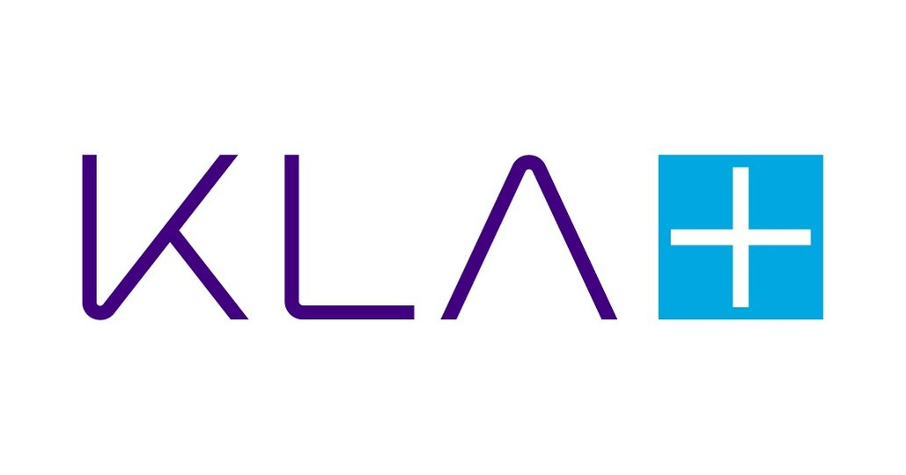

KLA · Milpitas, CA
Jun – Sep 2025
Machine Learning Engineer Intern
Built a physics-based synthetic data generation pipeline simulating optical distortions;
fine-tuned RCAN models improving geometric reconstruction robustness by 18%.